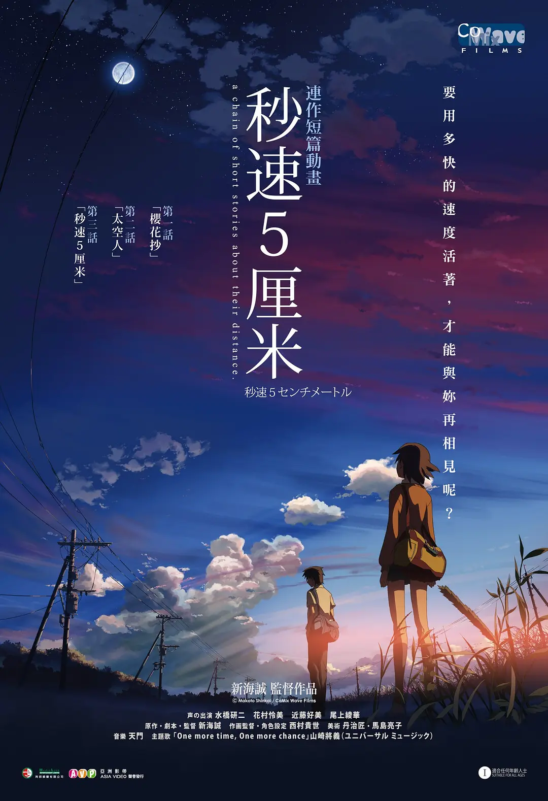

如果，樱花掉落的速度是每秒5厘米，那么两颗心需要多久才能靠近？
少年时，贵树（水橋研二配）和明理（近藤好美配）是形影不离的好朋友，可很快，一道巨大的鸿沟便横亘在两人中间：明理转学，贵树也随着父母工作的调动搬到遥远的鹿儿岛。在搬家前，贵树乘坐新干线千里迢迢和明理相会，在漫长的等待后，茫茫大雪中，两人在枯萎的樱花树下深情相拥，并献出彼此的first kiss，约定着下一次再一起来看樱花。
时光荏苒，两人竟再没见过，虽然在人海中一直搜寻彼此的身影，但似乎总是徒然。再后来，他们分别有了各自的生活，只是还偶尔会梦到13岁时的这段青涩而美好的感情，才明白当年怎么也说不出口的那个字就是爱。
少年时，贵树（水橋研二配）和明理（近藤好美配）是形影不离的好朋友，可很快，一道巨大的鸿沟便横亘在两人中间：明理转学，贵树也随着父母工作的调动搬到遥远的鹿儿岛。在搬家前，贵树乘坐新干线千里迢迢和明理相会，在漫长的等待后，茫茫大雪中，两人在枯萎的樱花树下深情相拥，并献出彼此的first kiss，约定着下一次再一起来看樱花。
时光荏苒，两人竟再没见过，虽然在人海中一直搜寻彼此的身影，但似乎总是徒然。再后来，他们分别有了各自的生活，只是还偶尔会梦到13岁时的这段青涩而美好的感情，才明白当年怎么也说不出口的那个字就是爱。